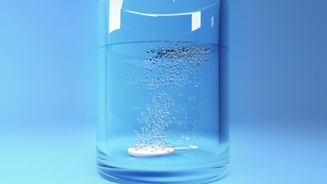
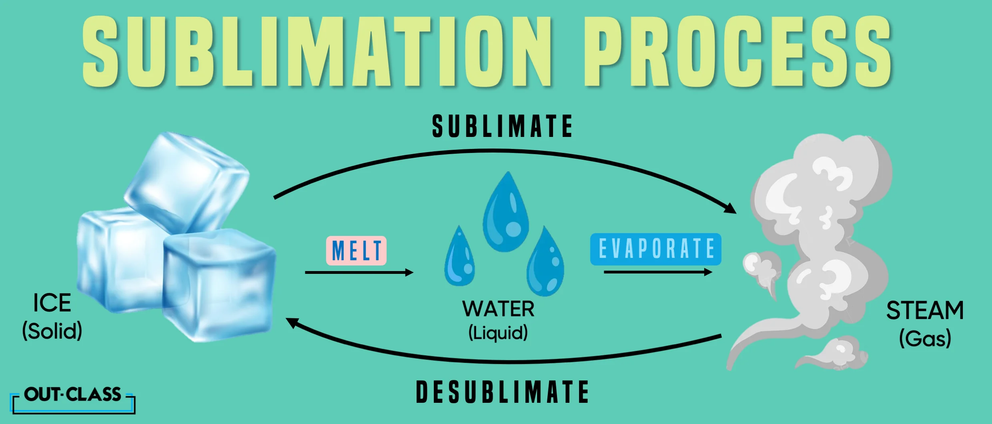

Sublimation
| Vietnamese | — |
|---|---|
| English | Sublimation |
| Pronunciation | /ˌsʌblɪˈmeɪʃn/ |
| Word type | noun (as labelled in the PDFs) |
Topic 2 — Meaning (Vietnamese)
Not separately specified in the PDF transcription.
Meaning (English)
Là quá trình biến đổi trực tiếp từ thể rắn sang thể hơi mà không qua thể lỏng. / The process in which a substance changes directly from a solid to a gas without passing through the
Example
Sublimation can separate liquid state. naphthalene from non-volatile impurities. (n) /ˌdɪsəˈluːʃn/ Hòa tan1
Images from the PDFs


